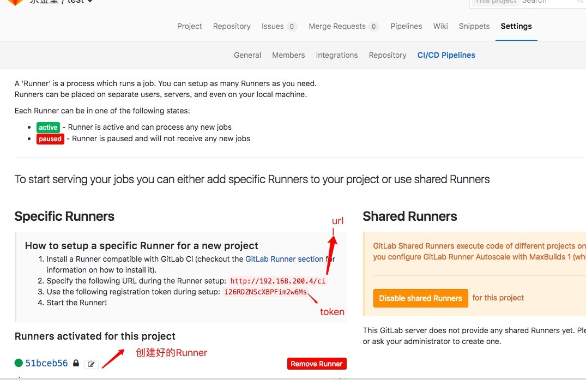

.gitlab-ci.yml
1.什么是yaml语言?
yaml 是一门专门来写配置文件的语言
yaml语言教程
1.1.语法规则
- 大小写敏感
- 使用缩进表示层级关系
- 缩进时不允许使用Tab键，只允许使用空格。
- 缩进的空格数目不重要，只要相同层级的元素左侧对齐即可
1.2 数据结构
对象：键值对的集合，又称为映射（mapping）/ 哈希（hashes） / 字典（dictionary）
12animal: pets# {animal: 'pets'}数组：一组按次序排列的值，又称为序列（sequence） / 列表（list）
1234- Cat- Dog- Goldfish# ['Cat', 'Dog', 'Goldfish']复合结构
12345languages:- Rubywebsites:YAML: yaml.org# { languages: [ 'Ruby'],websites: { YAML: 'yaml.org'} }纯量（scalars）：单个的、不可再分的值
12345678910111213141516171819202122232425262728293031323334353637383940414243444546474849number: 12.30# 数字 { number: 12.30 }isSet: true# 布尔值 { isSet: true }parent: ~# null值 { parent: null }iso8601: 2001-12-14t21:59:43.10-05:00# 时间，采用ISO8601格式，{ iso8601: new Date('2001-12-14t21:59:43.10-05:00') }date: 1976-07-31# 日期采用复合 iso8601 格式的年、月、日表示 { date: new Date('1976-07-31') }e: !!str 123f: !!str true# YAML 允许使用两个感叹号，强制转换数据类型。{ e: '123', f: 'true' }str: 这是一行字符串# 字符串默认不使用引号表示。{ str: '这是一行字符串' }str: '内容： 字符串'# 如果字符串之中包含空格或特殊字符，需要放在引号之中。{ str: '内容: 字符串' }s1: '内容\n字符串's2: "内容\n字符串"# 单引号和双引号都可以使用，双引号不会对特殊字符转义。{ s1: '内容\\n字符串', s2: '内容\n字符串' }str: 'labor''s day'# 单引号之中如果还有单引号，必须连续使用两个单引号转义。{ str: 'labor\'s day' }str: 这是一段多行字符串# 字符串可以写成多行，从第二行开始，必须有一个单空格缩进。换行符会被转为空格。{ str: '这是一段 多行 字符串' }this: |FooBarthat: >FooBar# 多行字符串可以使用|保留换行符，也可以使用>折叠换行。{ this: 'Foo\nBar\n', that: 'Foo Bar\n' }s1: |Foos2: |+Foos3: |-Foo# +表示保留文字块末尾的换行，-表示删除字符串末尾的换行。{ s1: 'Foo\n', s2: 'Foo\n\n\n', s3: 'Foo' }message: |<p style="color: red">段落</p># 字符串之中可以插入 HTML 标记。{ message: '\n<p style="color: red">\n 段落\n</p>\n' }引用
锚点&和别名，可以用来引用。&用来建立锚点（defaults），<<表示合并到当前数据，\用来引用锚点。1234567891011defaults:adapter: postgreshost: localhostdevelopment:database: myapp_development<<:test:database: myapp_test<<:
|
|
2. .gitlab-ci.yml 具体配置
2.1. Jobs
定义任务，可以有多个任务
⚠️：不能使用以下关键字：image, services, stages, types, before_script, after_script, variables, cache
2.2. before_script and after_script
所有job执行前与执行后执行的脚本
⚠️：可以在job里覆盖before_script and after_script
2.3 stage
pipelines 执行阶段,原字段为types(弃用)
2.4 script
Job 执行的脚本
2.5 only and except
Job在什么时候创建或除了什么创建，使用以下关键词：branches、tags、api、等
2.6 tags
tags用于指定Job运行具体的gitlab-runner
2.7 when
Job的运行方式 on_success、on_failure、always、manual
2.8 cache
|
|
3 example
gitlab-runner
1.mac 环境
1.1 下载
|
|
1.2 赋权
|
|
1.3 启动一个Runner
|
|
1.4 注册
|
|
1.5 输入gitlab URL
1.6 输入token
1.7 输入描述
1.8 输入标签
1.9 输入Runner执行的语言
